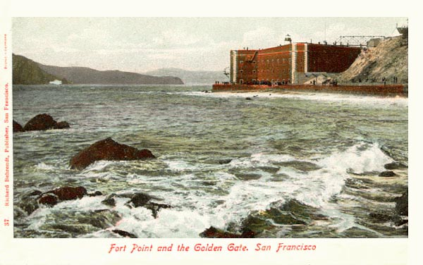
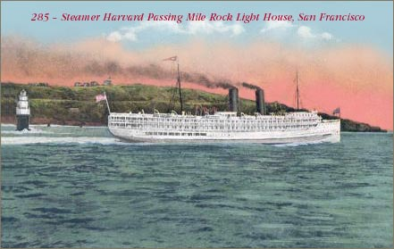
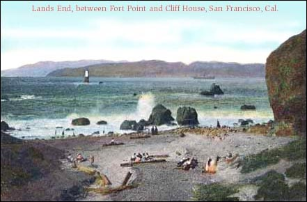

Fort Point, San Francisco, California, before the Golden Gate Bridge
Fort Point, Mile Rock Light House, Lands End
Fort Point Photo Page
The Map
 A Modern Map Showing the Ocean
Beach Area
A Modern Map Showing the Ocean
Beach Area
Find Playland (site), Cliff House (with the Musee Mecanique and Camera
Obscura), Sutro Baths (ruins), Sutro Heights, Windmills and the Beach Chalet in Golden Gate Park,
Mile Rock Light House, and Fort Point under the Golden Gate Bridge.
Lands End and Mile Rock Light House

Lands End


Click Here

Click Here

Click Here
Amusement Parks WebMaster
Last Updated

Support Free-access Online History and Genealogy.
Join Us!